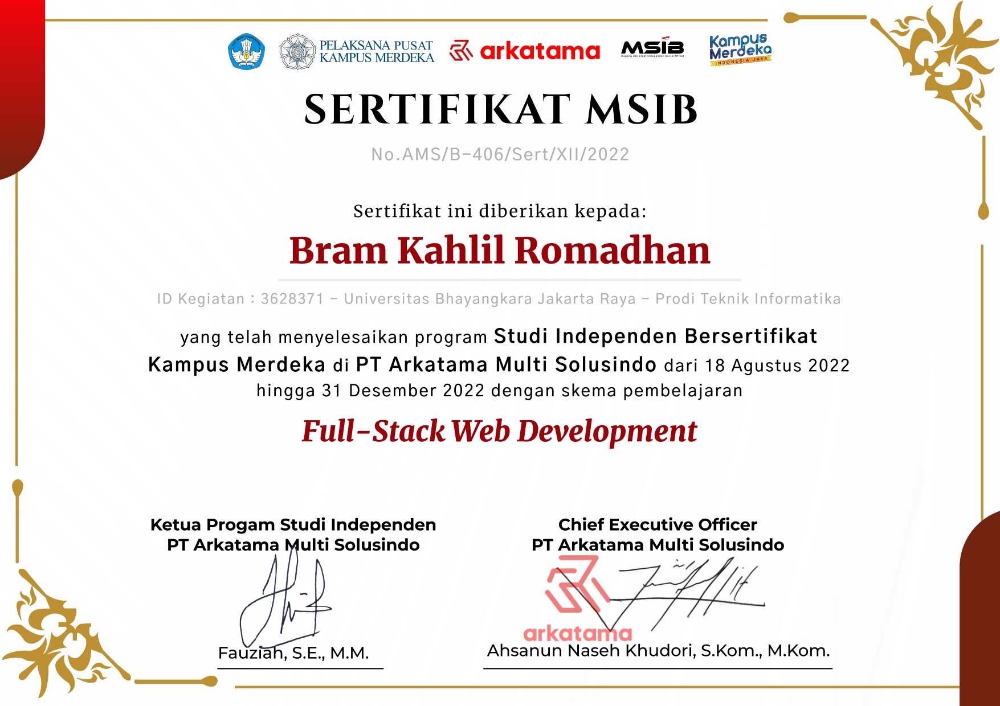
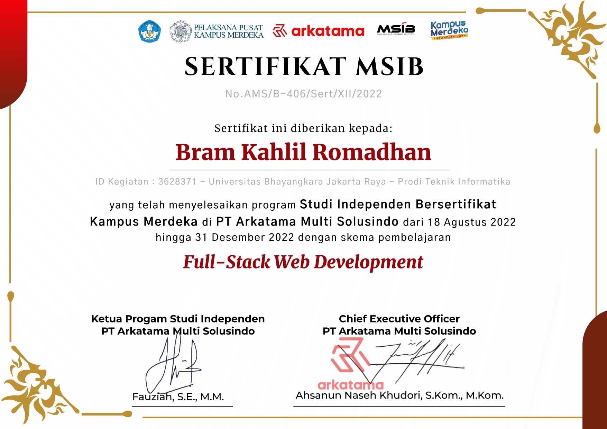
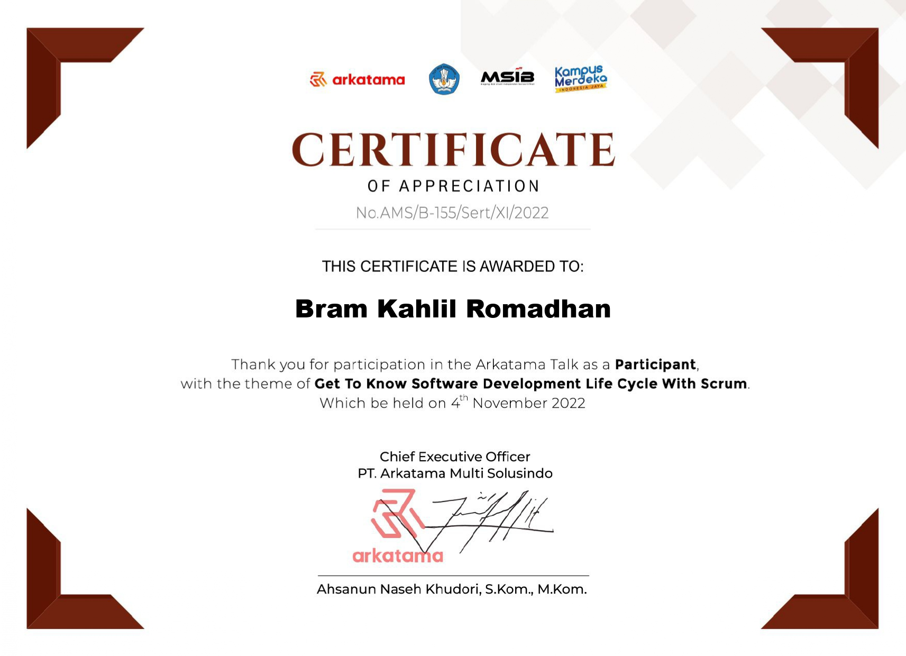
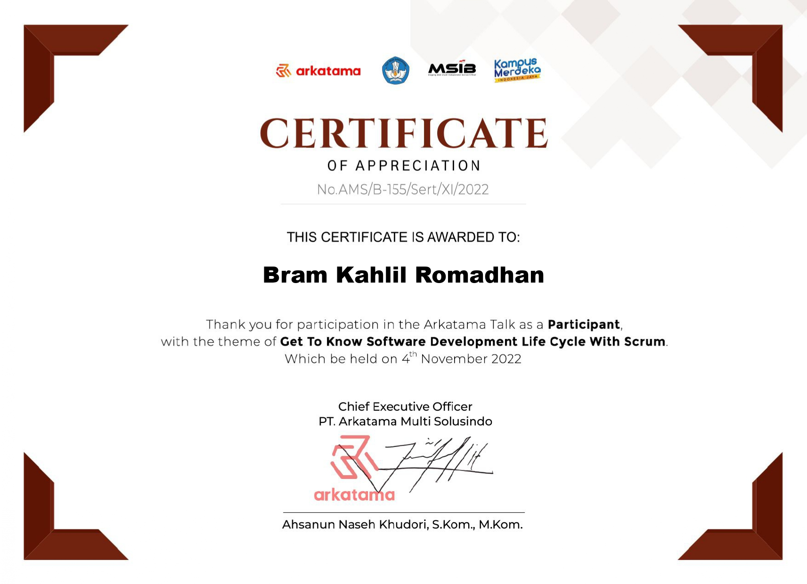

About Me
My introduction
Halo, saya Bram Kahlil Romadhan! Saya adalah seorang mahasiswa jurusan Ilmu Komputer di Universitas Bhayangkara Jakarta Raya Bekasi. Saya sangat tertarik pada pengembangan perangkat lunak, khususnya dalam pengembangan aplikasi web. Selama masa kuliah, saya telah mengambil berbagai mata kuliah yang membantu saya memahami dasar-dasar pemrograman, basis data, keamanan informasi, dan teknologi terbaru. Saya juga aktif dalam berbagai proyek pengembangan perangkat lunak di luar kurikulum akademis.
Selain IT, saya juga memiliki minat dalam sepak bola. Saya percaya bahwa memiliki hobi di luar dunia teknologi membantu menjaga keseimbangan dalam hidup dan merangsang kreativitas. Terima kasih telah mengunjungi profil saya. Saya sangat antusias untuk berkolaborasi dengan rekan-rekan mahasiswa IT lainnya, berbagi pengetahuan, dan terus mengembangkan diri dalam bidang ini.
 

 
